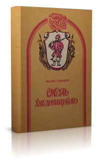
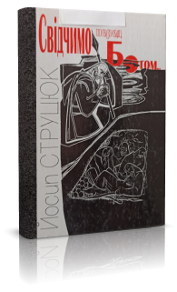
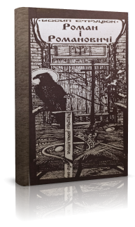
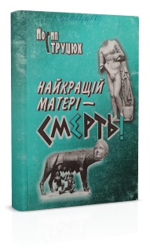

Драма
Звертають на себе увагу драматичні поеми Йосипа Струцюка «Смерть Хмельницького» та «Свідчимо перед Богом» (про гетьмана Івана Виговського), а також «Анафема» (про гетьмана Івана Мазепу) і п'єса «Декалог самопосвяти», де відтворено бій у Гурбинському лісі між українськими повстанцями та енкаведистами.
Вистава за драматичною поемою «Роман» з великим успіхом ішла під назвою «Роман — великий князь Волинський і Галицький» на початку 1990-х у Волинському музично-драматичному театрі ім. Т. Г. Шевченка.
Є також п'єса про юнацькі роки імператора Нерона «Найкращій матері — смерть», а також твір за грецькими міфами «Теогонія», в якому розкрито людиноненависницьку продажну тоталітарну систему.

«Смерть Хмельницького»Драматична поема.
«Свідчимо перед Богом»Драматична поема про гетьмана Івана Виговського.
«Роман і Романовичі»Драматична поема; за її мотивами поставлено виставу «Роман — великий князь Волинський і Галицький» у Волинському музично-драматичному театрі ім. Т. Г. Шевченка.
«Найкращій матері — смерть»П'єса про юнацькі роки імператора Нерона.